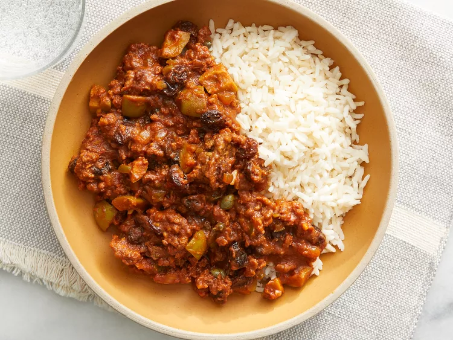

Home
Classic Cuban-Style Picadillo

What's Classic Cuban-Style Picadillo All About?
Classic Cuban-style picadillo is a flavorful ground beef dish, often featuring a blend of spices, including cumin, oregano, and a touch of sweetness from tomato. It's typically slow-cooked, allowing the flavors to meld beautifully, resulting in a rich and savory stew. The ingredients are often kept simple, focusing on the fundamental tastes of the meat and the spices.
The dish is frequently served in a variety of ways, including on rice, atop tostones (fried plantains), or in a savory sandwich. Its vibrant color and complex tastes make it a popular and beloved Cuban comfort food.
Ingredients
- 1 tablespoon olive oil
- 1 small onion, chopped
- ½ green bell pepper, chopped
- 1 clove garlic, minced, or more to taste
- 1 pound lean ground beef
- 1 (8 ounce) can tomato sauce
- 6 large pitted green olives, quartered
- ½ cup raisins
- 1 tablespoon capers (Optional)
- 2 (1.41 ounce) packages sazon seasoning (such as Goya®)
- 1 tablespoon ground cumin
- 1 teaspoon white sugar
- salt to taste
Procedures And Steps
Gather all ingredients.
- Overhead of picadillo ingredients in various bowls and measuring cups.
- Toast cumin seeds in a small pot over low heat until fragrant, 2 to 3 minutes. Cool, 5 minutes. Grind into a powder using a spice grinder or a mortal and pestle.
- Transfer ground cumin to a small bowl. Add Himalayan pink salt, turmeric, paprika, Italian seasoning, seasoning blend, and black pepper; set spice mixture aside.
- Heat oil in a large pot over medium heat. Add ground beef; cook and stir until browned, about 5 minutes. Stir in 1/2 spice mixture. Add onion; cook and stir until softened, about 5 minutes. Add carrots and potato; cook, covered, stirring occasionally, until slightly softened, about 5 minutes.
- Stir in tomatoes; bring sauce to a boil. Reduce heat to medium-low; stir in cilantro-garlic mixture and remaining 1/2 spice mixture. Simmer, stirring occasionally, until flavors combine, 30 to 40 minutes. Thin sauce with water if it seems too thick.
- Bring a large pot of lightly salted water to a boil. Cook angel hair pasta in the boiling water, stirring occasionally, until tender yet firm to the bite, 4 to 5 minutes. Drain. Serve sauce over pasta.